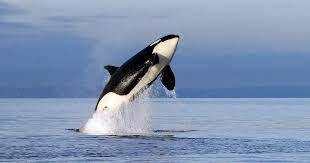

A vida das orcas
As orcas, ou baleias-assassinadas, são os maiores golfinhos e um dos predadores mais potentes do mundo. São reconhecidos imediatamente por sua coloração preta e branca características. Inteligentes e sociáveis, as orcas emitem uma grande variedade de sons comunicativos, e cada grupo produz ruídos distintivos reconhecidos por seus membros até mesmo à distância. Elas fazem uso de ecolocalização para se comunicar e caçar, emitindo sons que reverberam embaixo d’água até encontrar objetos e depois retornam, revelando sua localização, tamanho e formato.

Texto feito por: Paulo Nery
Postado: 06/12/2022